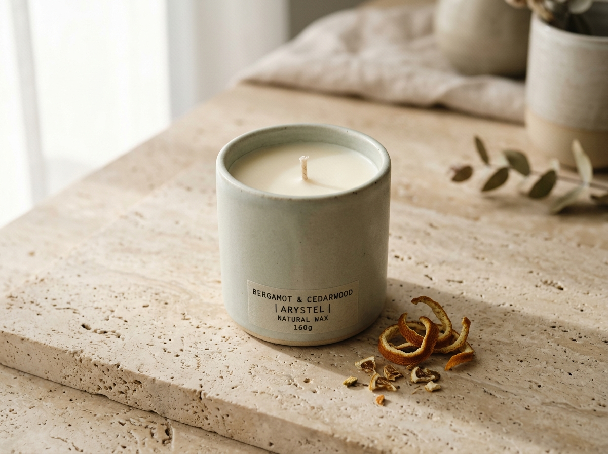
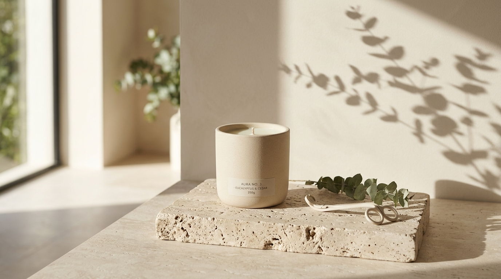
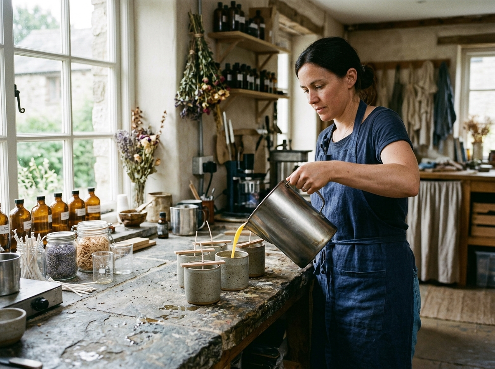

Kejernihan Napas & Awal Hari · Atelier Jakarta
Menyambut pagi dengan kejernihan botani.

Embun Fajar

Fase Fajar · Pencahayaan Alami
Keramik Stoneware Glasir Celadon
100% Nabati
Paduan kedelai organik & lilin lebah tanpa parafin
45–82 Jam
Pembakaran lambat dengan kolam lelehan merata
Minyak Murni
Ekstrak botani Nusantara & resin tanpa ftalat
Wadah Ulang
Keramik stoneware & batu alam siap isi ulang
Koleksi Kurasi Sirkadian
Dua belas komposisi untuk empat ritme hari.
Atelier Racik Lilin Kustom
Susun wadah, sumbu, dan tiga lapis minyak botani pribadi.
01. Pilih Material Wadah (220g)
02. Pilih Karakter Sumbu
03. Susun Piramida Lapisan Aroma
04. Konsentrasi Minyak Esensial
Jurnal Waktu Bakar & Perawatan
Merawat sumbu agar setiap lapis aroma bekerja utuh.

Atelier Jakarta · Batch Kecil